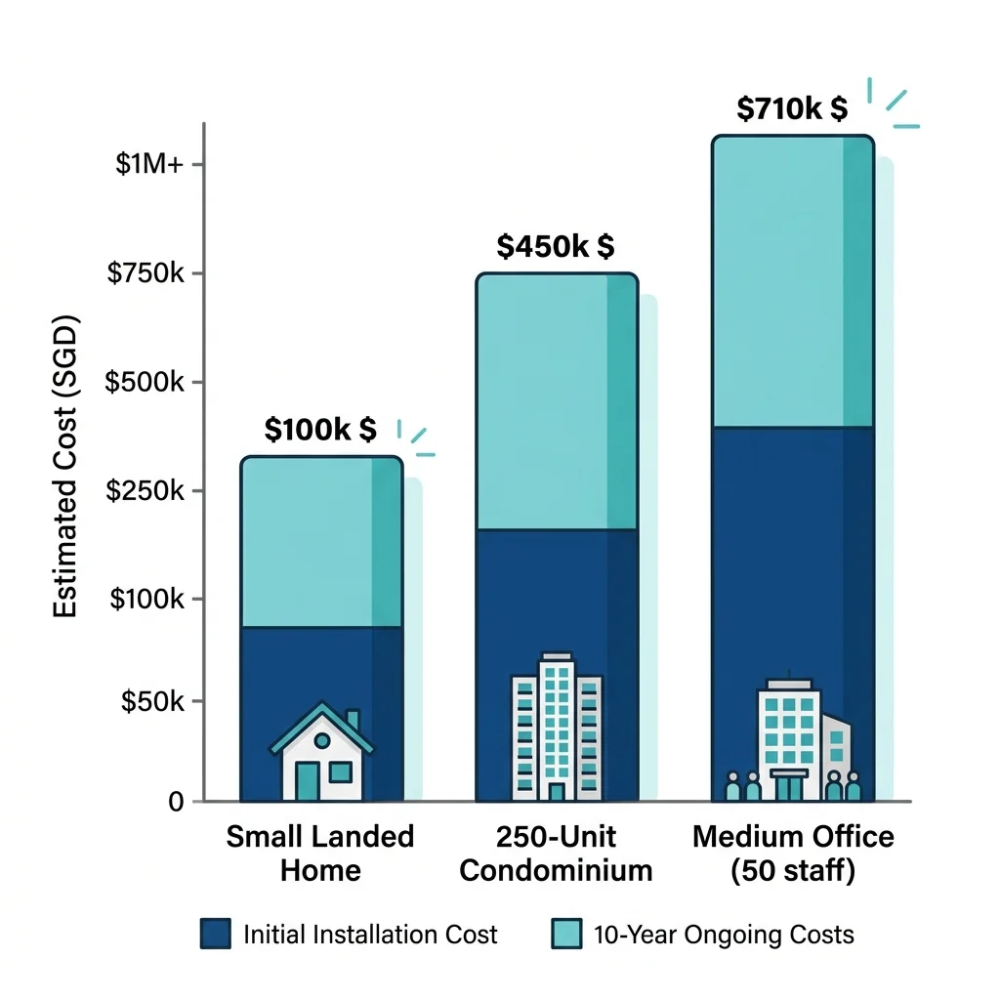
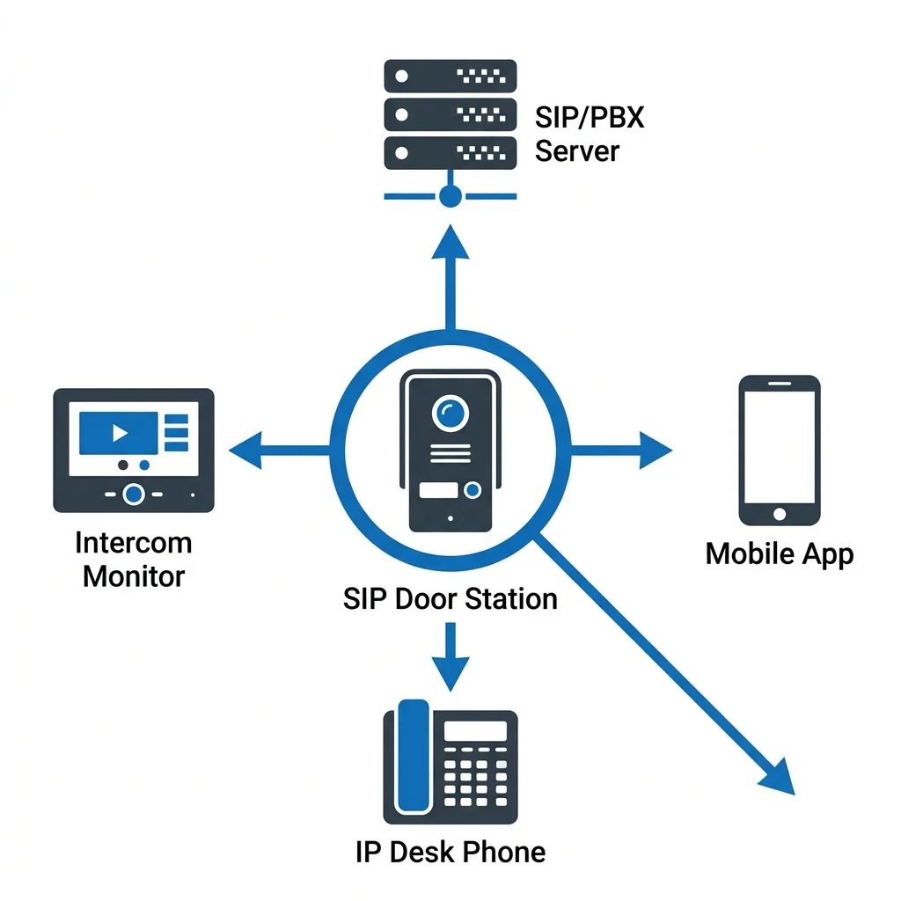
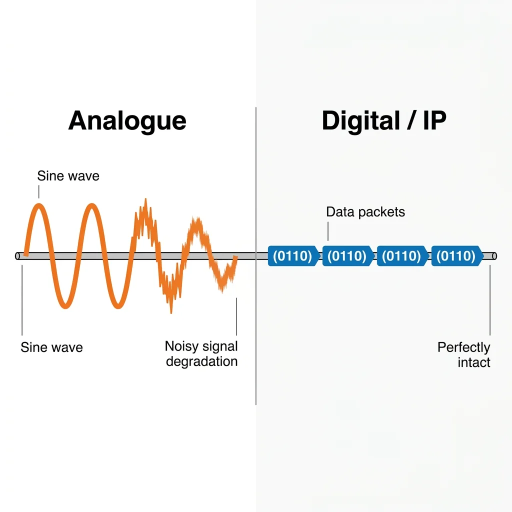
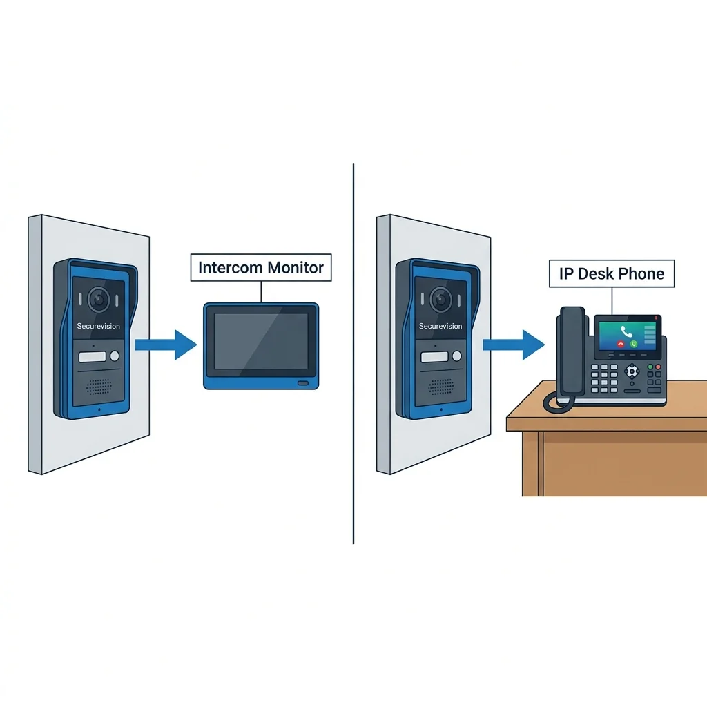
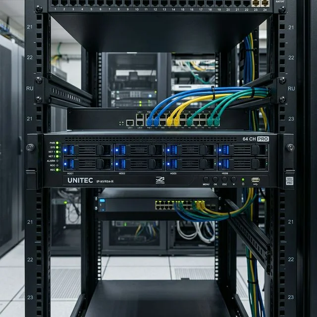

1. Is Your Office Phone System Obsolete?
Most Singapore SMEs are still paying monthly fees for a phone system that was installed when they first moved in. If your office runs on a Panasonic KX or NS series panel, or a generic key phone system from the early 2000s, this guide is for you.
What Is a PABX / Key Phone System?
A PABX (Private Automatic Branch Exchange) is a private telephone network used within a company. In Singapore, the Panasonic KX and NS series dominated offices for two decades — reliable, well-supported, and well-understood by every telecoms contractor in the market.
Key phone systems are simpler versions: a central unit with a handful of handsets, typically used by offices with 2–10 staff. Both types share the same fundamental architecture — a proprietary control unit connected to multiple desk phones via structured cabling, with one or more SingTel analogue lines bringing external calls in and out.
For their era, these systems were excellent. The problem is not that they stopped working. The problem is that the world around them changed.
Why Panasonic PBX Is Now a Liability
Panasonic discontinued the KX-TDA and KX-TDE series, and support for many NS series models is winding down. The practical consequences for Singapore offices are:
- Parts availability is shrinking. Replacement expansion cards, power supply units, and proprietary handsets are increasingly sourced from grey-market stock. When a component fails, lead times are unpredictable and prices are steep.
- There is no remote work capability. Every extension is physically tied to a port on the control unit. Staff working from home have no access to their office number — they use personal mobiles for business calls, which creates compliance and communication problems.
- There is no mobile app. You cannot answer your office extension on your phone when away from your desk. Calls not answered go to voicemail on the system, which itself may require a proprietary handset or software to retrieve.
- SIP trunks are not supported on older models. The transition from analogue PSTN lines to SIP trunks — which SingTel is actively promoting as part of their PSTN migration programme — is impossible without replacing the PBX.
💡 Securevision's Position on Panasonic Systems
We still service Panasonic KX and NS series systems for existing clients. If your system is running and your needs are simple, there is no urgency. But for any office planning a renovation, relocation, or expansion — or for any office already experiencing parts availability issues — IP is the only recommendation we make today.
The Hidden Monthly Cost
The most underappreciated cost of legacy systems is the ongoing line rental. A typical Singapore SME running 4 SingTel analogue lines pays approximately $35–45 per line per month in line rental, before any call charges — totalling $140–180 per month just to keep the lines active.
A SingTel SIP trunk with equivalent capacity (4 concurrent calls) typically costs less, with no per-line rental model, call charges billed per second, and the ability to port your existing office numbers across. For many offices, the SIP trunk savings alone pay for the IP phone system upgrade within 18–24 months.

Estimated monthly savings when switching to SIP trunks.Signs Your System Needs Replacing
Sign 1: Staff use personal mobiles for business calls
Your office number should follow your staff, not be tied to a desk. If your team is giving out personal mobile numbers to clients because the office phone system is inconvenient, you have lost control of your business communications.
Sign 2: You cannot add extensions without hardware
Legacy PABX systems require physical expansion cards to add new extensions. If your panel is full, adding a new staff member means either a hardware upgrade or telling someone they do not get a desk phone. IP systems add extensions in software — no hardware needed.
Sign 3: Your system has no manufacturer support
If Panasonic no longer supports your model, you are one component failure away from a full replacement under pressure. Planning the migration on your own timeline is far less disruptive than being forced into it after a failure.
Sign 4: You are still paying for multiple analogue lines
SingTel's PSTN network is being migrated to IP infrastructure. Analogue lines will eventually be discontinued. Acting before the deadline gives you time to plan properly and port your numbers without disruption.
Sign 5: Remote work is impossible on your current system
Post-pandemic work patterns are permanent for most Singapore offices. If your staff cannot answer their office extension from home or on the road, your phone system is reducing your team's effectiveness every day.
2. How IP Phone Systems Work
An IP phone system does everything your current PABX does — extensions, call transfer, voicemail, hold — but over your internet connection instead of copper phone lines. The result is a system that costs less to run, works from anywhere, and never needs a hardware upgrade to add a new user.
The Three Components
Every IP phone system has three building blocks. Understanding them makes everything else clear.
The IP PBX (The Brain)
The PBX is the central controller — the equivalent of your Panasonic control unit, but running as software on a server or in the cloud. It manages all extensions, call routing, voicemail, call queues, and ring groups. Yeastar's S-series runs as an on-premise appliance about the size of a small router. Their P-series runs in the cloud with no on-site hardware required.
The IP Phones (The Endpoints)
These are your desk phones — but instead of connecting to a proprietary port on the Panasonic unit, they connect to your office network via a standard network cable (CAT5e/CAT6). They draw power from the network switch via PoE (Power over Ethernet), eliminating separate power adapters.
The SIP Trunk (The Outside World)
A SIP trunk is a virtual phone line delivered over your broadband connection. It replaces your SingTel analogue lines. Your Yeastar PBX registers with the SIP trunk provider, which connects you to the public telephone network for making and receiving calls. You keep your existing office numbers — they are ported across during migration.

Cloud connectivity and local network architecture.What You Get That You Don't Have Now
| Feature | Legacy PABX | IP Phone System |
|---|---|---|
| Remote work | Not possible | Answer office number anywhere |
| Mobile app | None | iOS & Android softphone |
| Add extension | Hardware card required | Software only, 5 minutes |
| Voicemail to email | No | Yes — MP3 to your inbox |
| SIP trunk | Not supported (older) | Native support |
| Door phone | Separate intercom | Same system, one interface |
| Video calling | No | Yes (Fanvil video phones) |
| Call recording | No / Optional add-on | Built-in (Yeastar) |
| Multi-branch | Separate systems | One PBX, multiple locations |
| Maintenance | Proprietary contractor | Any SIP-qualified engineer |
On-Premise vs Cloud PBX
The most common question we receive is whether to install a Yeastar S-series on-premise appliance or use the Yeastar P-series cloud platform. Both are valid — the right choice depends on your office's priorities.
On-Premise PBX
Gives you full control. Your call data stays on-site. It works even if your internet connection goes down (for internal calls). It is a one-time hardware purchase with no monthly platform fee. For Singapore offices where data sovereignty and network reliability are priorities.
Cloud PBX
Eliminates hardware entirely. There is nothing to install on-site beyond the desk phones themselves. Firmware updates happen automatically. Staff working from home or across multiple branch offices are all on the same system with zero configuration.
💡 Which Should You Choose?
For most Singapore SMEs with 5–30 staff in a single office and a reliable SingTel Fibre connection, the Yeastar S-series on-premise appliance is the better value. You own the hardware, there is no recurring platform fee, and the system is entirely within your control. For offices with multiple branches, a high proportion of remote staff, or no IT resource on-site, the Yeastar P-series cloud platform removes all infrastructure management from your plate.
3. SingTel SIP Trunk — Replacing Your Phone Lines
A SIP trunk is the modern replacement for your SingTel analogue phone line. Instead of a copper pair terminating in a physical socket, your phone lines are delivered as a service over your existing broadband connection. Same numbers, same calls — but at lower cost and with far greater flexibility.
What a SIP Trunk Is
SIP (Session Initiation Protocol) is the standard used by IP phone systems to make and receive calls. A SIP trunk is simply a connection between your on-site PBX and a carrier's network — in this case, SingTel — that uses SIP over your broadband connection.
From the user's perspective, nothing changes. You dial out and receive calls exactly as before. The difference is under the hood: instead of a physical analogue line with a fixed monthly rental, you have a virtual connection where you pay only for the concurrent calls you actually need, billed per second.

Seamless connectivity with mobile and desk endpoints.How It Works With Yeastar
The Yeastar S-series and P-series both support SingTel SIP trunks natively. Once the trunk is configured in the Yeastar web interface, all outgoing calls are routed through SingTel's IP network and all incoming calls to your office numbers are delivered directly to your Yeastar PBX.
The configuration requires correct SIP credentials from SingTel, proper NAT traversal settings on your router, and — critically — SIP ALG disabled on your firewall. SIP ALG (Application Layer Gateway) is a feature present in most consumer routers that attempts to help SIP traffic but almost always causes problems including one-way audio, dropped calls, and failed registrations. This is the most common cause of IP phone system problems in Singapore offices that attempt self-installation.
💡 Why SIP Trunk Setups Fail
The single most common failure in Singapore IP phone installations is SIP ALG left enabled on the office router. It causes one-way audio — you can hear the caller but they cannot hear you, or vice versa. The second most common issue is incorrect NAT configuration. Securevision handles the full network configuration as part of every Yeastar installation, including router settings, firewall rules, and SingTel trunk registration. We do not hand over a system until every extension has been tested on an outgoing and incoming call.
Number Porting — Keeping Your Existing Office Number
This is the question every office asks first: can we keep our number? The answer is yes. SingTel supports number porting from analogue lines to SIP trunks. The process typically takes 2–4 weeks and requires a formal porting request submitted through your new SIP trunk provider.
During the porting window, both the old analogue line and the new SIP trunk can be active simultaneously. Calls continue to arrive normally throughout the migration. Once porting is confirmed, the analogue line is cancelled and all calls route through the SIP trunk.
Cost Comparison — Analogue Lines vs SIP Trunk
| Item | 4 Analogue Lines (Legacy) | SIP Trunk (4 Channels) |
|---|---|---|
| Monthly line rental | ~$160/month (4 x $40) | Included in SIP plan |
| Call charges | Per minute, peak rates | Per second, flat rate |
| Adding a 5th line | New physical line, weeks | Add channel in minutes |
| Number porting | Not applicable | Supported — keep your number |
| Remote extensions | Not possible | Any location, same number |
| Typical monthly total | $200–$350 | $80–$150 (estimated) |
4. Fanvil Door Phones — Visitor Access Integration
If your office has a reception desk, you may not need a separate intercom system at all. A Fanvil SIP door phone registered to your Yeastar PBX means your receptionist answers the door on the same desk phone they use for customer calls — with no additional monitors, no additional apps, and no additional system to manage.
How It Works
A Fanvil door phone is a SIP device — exactly like a desk phone, but installed at your entrance. It has a camera, a speaker, a microphone, and a call button. When a visitor presses the button, it sends a SIP call to whatever extension you have configured — typically the reception desk, a ring group covering multiple extensions, or a call queue.
The receptionist's Fanvil desk phone rings. The screen shows the visitor's live video feed. The receptionist speaks with the visitor and, once satisfied, presses a pre-configured key on the phone (typically *9 or a programmable button labelled "Unlock") to trigger the door release relay built into the Fanvil door phone. The door — connected to an EM lock, electric strike, or magnetic lock — opens.

One-click visitor management from the reception desk.Hardware Involved
Fanvil i16V Outdoor Door Station
The outdoor unit. IP65-rated weatherproof housing suitable for Singapore's humidity and rainfall. Built-in 2MP camera with wide-angle lens, IR night vision, and a robust stainless steel call button. Connects via CAT5e/CAT6, powered by PoE.
Fanvil X6U Reception Desk Phone
The primary indoor endpoint for most Singapore offices. 3.5-inch colour screen, 6 SIP lines, built-in PoE, HD audio, and programmable function keys. The receptionist sees the visitor on the screen and unlocks the door with a single key press.
Door Lock (EM Lock or Electric Strike)
Connected to the relay output on the Fanvil i16V. When the receptionist triggers the release, the relay closes for a configurable duration (typically 3–5 seconds), allowing the door to open. EM locks are recommended for glass doors.
💡 The Honest Assessment
The Fanvil door phone plus Yeastar PBX combination is not right for every office. It works brilliantly when there is a permanent receptionist at a desk during all hours the door needs to be controlled. It is the most cost-effective professional solution for that scenario — no separate intercom system, no separate monitor, one system does everything. If your entrance needs to be managed outside business hours, or if you have no dedicated reception staff, talk to us about a standalone Akuvox intercom instead.
5. What Securevision Installs: Yeastar & Fanvil
Securevision specifies Yeastar for IP PBX and Fanvil for desk phones and door phones. Both brands are fully supported in Singapore, compatible with SingTel SIP trunks, and carry strong firmware support cycles.
Yeastar — IP PBX Systems
Yeastar is a leading manufacturer with strong presence across Southeast Asia and active distributor support in Singapore. Their S-series on-premise appliances and P-series cloud platform are both well-suited to SME deployments of 5–100 extensions.
Yeastar S20
Entry-level on-premise appliance for small Singapore offices. Supports up to 20 extensions and 10 concurrent calls. Compact form factor, wall-mountable, fanless/silent operation.
Yeastar S50
Mid-range appliance for growing offices. Supports up to 50 extensions and 25 concurrent calls. Rack-mountable, supports multiple SIP trunks for redundancy.

The S20: Reliable on-premise hardware for SMEs.Fanvil — Desk Phones & Door Phones
Hardware Selection
- Fanvil X3U: Staff desk phone with HD audio and PoE.
- Fanvil X6U: Reception phone with 3.5" colour screen.
- Fanvil i16V: Weatherproof video door station.
- Fanvil i31S: Audio-only indoor flush-mount station.
Why Fanvil?
Fanvil devices are fully SIP-compliant and rigorously tested for compatibility with Yeastar PBX. Firmware is actively maintained with regular security updates and local Singapore support.
Is Your Office Ready to Upgrade?
Answer these six questions honestly. If you answer yes to three or more, an IP phone system upgrade will pay for itself within two years and improve your team's communication from day one.
Q1: How many SingTel lines are you currently paying for?
If you are paying for 3 or more analogue lines, your monthly line rental is likely higher than the equivalent SIP trunk cost. A line-by-line comparison with your current bill is the fastest way to quantify the saving.
Q2: How many extensions / desk phones does your office have?
Systems with 5 or more extensions generate enough internal call volume to justify a proper PBX. If you have fewer than 5 staff, a simpler setup may suit you better.
Q3: Do staff need to take calls away from their desks?
A softphone app on their mobile means their office number follows them everywhere — whether working from home or on-site. This is impossible on a legacy PABX.
Q4: Do you have a reception desk that also manages your front door?
If your receptionist currently has to physically walk to the door, a Fanvil door phone on the Yeastar system eliminates that entirely. One device, one interface.
Q5: Is your current system still under manufacturer support?
Unsupported systems represent a continuity risk. When a component fails, you may have no path to repair other than full replacement under pressure.
Q6: Are you planning an office move or renovation in the next 2 years?
A move or renovation is the natural trigger for a phone system upgrade. Cabling is already being replaced, and starting fresh is structurally simpler than retrofitting.
🔍 Next Step: Free Site Assessment
If you answered yes to three or more questions above, the most useful next step is a 30-minute assessment call with our team. We will review your current system, your SingTel line costs, and your headcount — and give you a clear scope and budget estimate for a Yeastar migration.
Book Free Assessment